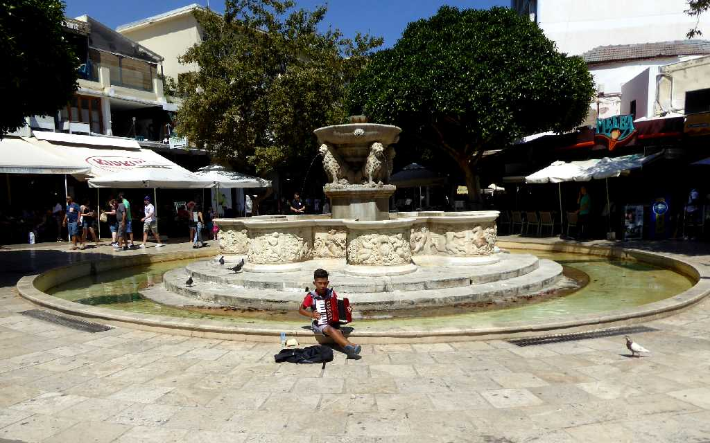
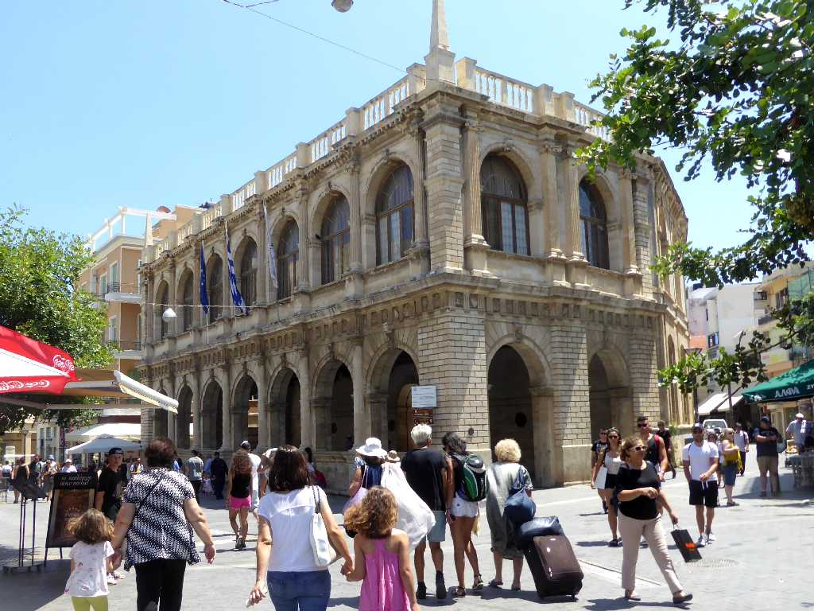
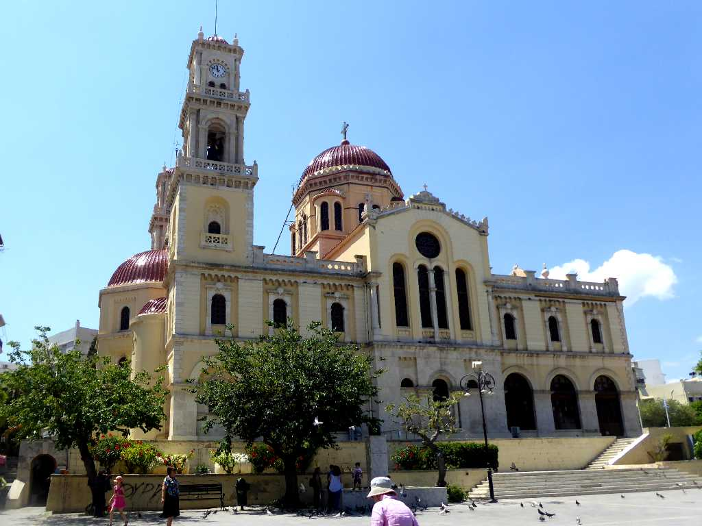
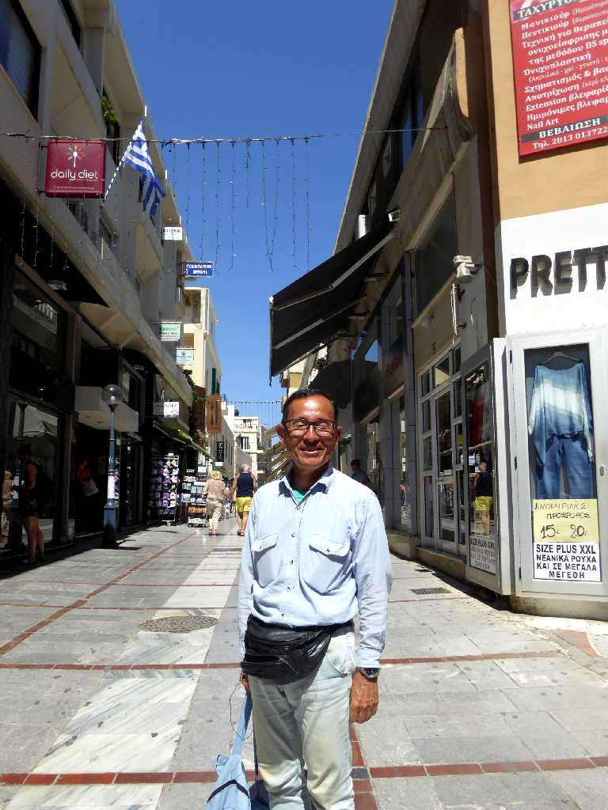

Morosini Fountain Lion's Square Heraklion Crete
クレタ島の中心都市イラクリオン

1628 Venetian Loggia Town Hall Heraklion

Agios Minas Cathedral Heraklion
イラクリオンの守護聖人である聖メナス(AD285-309)に捧げた１８９５年に創られたギリシャ正教の司教座大聖堂

June 23 2018 Heraklion Crete